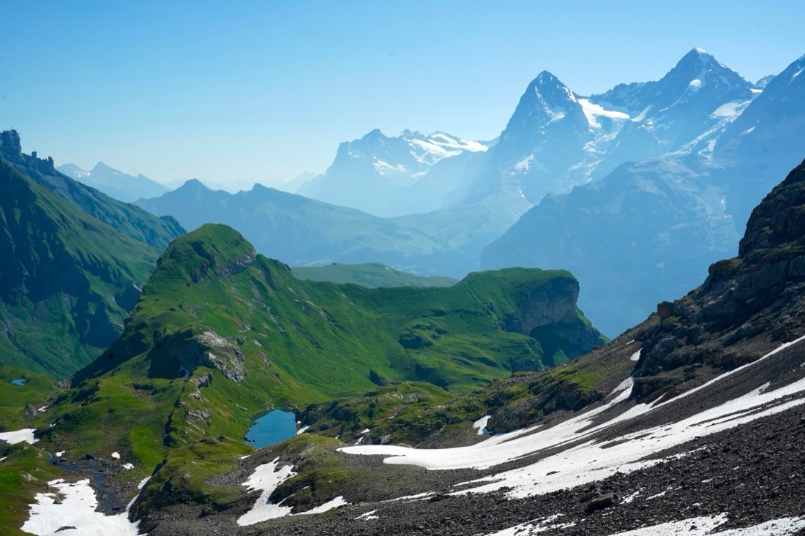
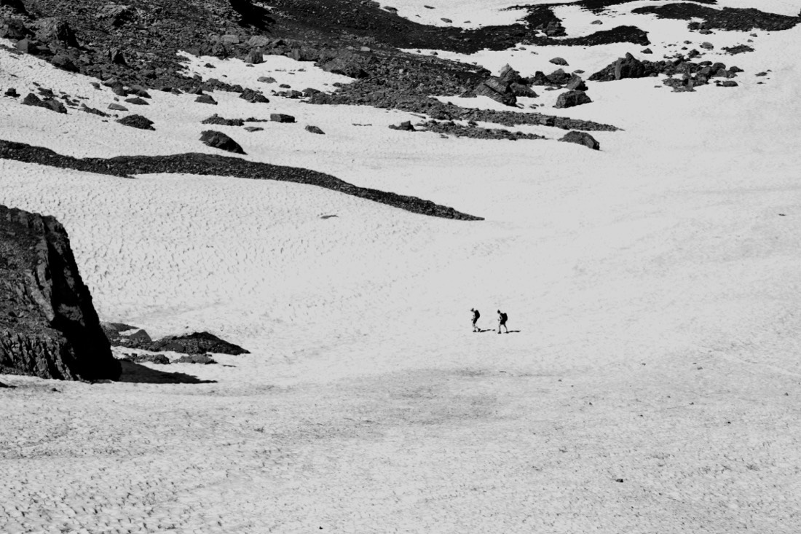
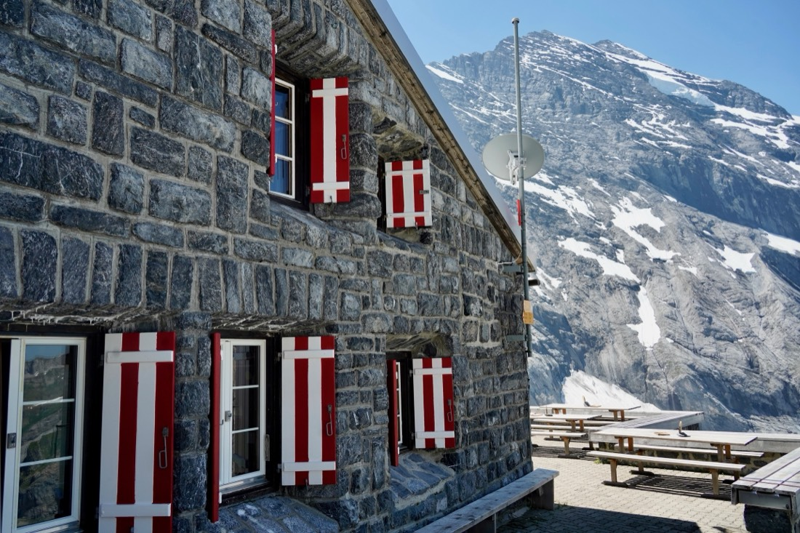

The Via Alpina crosses Switzerland from east to west, and its Bernese Oberland stages are some of the finest — and toughest — days of walking in the Alps. Starting a short train ride from Interlaken, this self-guided route climbs from the Lauterbrunnen valley past Mürren, then crosses the Sefinenfurgge and the Hohtürli, the highest pass on the trail, with the Eiger, Mönch, and Jungfrau on the horizon. Nights are spent in Swiss Alpine Club huts and a mountain inn, ending at the turquoise Oeschinensee above Kandersteg. It's a big objective packed into a long weekend; we book the huts and hand you the route.

At a Glance
Trip Style
Self-guided
Duration
4 Days / 3 Nights
Group Size
Your Group (2–6 recommended)
Difficulty
Challenging
Max Elevation
2,834 m
Start / End
Interlaken ⟶ Interlaken (by train)
Accommodation
SAC mountain huts • Mountain inn (half board)
Activities
Hut-to-hut backpacking • High alpine passes
The Route
Route Map
Route shown is approximate and for illustration only.
Day by Day
Trip Itinerary
Day 1Lauterbrunnen to Rotstockhütte~13 km · +1,300 m
Take the train from Interlaken to Lauterbrunnen, then climb past waterfalls to the car-free village of Mürren and on to the Rotstockhütte (2,039 m) beneath the Schilthorn.
Day 2Sefinenfurgge to Griesalp~11 km · +600 m / −1,250 m
A steep climb to the Sefinenfurgge (2,612 m), with views back to the Jungfrau massif, then a long descent of steps and scree to the hamlet of Griesalp.
Day 3Hohtürli to Blüemlisalphütte~9 km · +1,450 m
The crux of the route: a relentless climb through meadows and moraine to the Hohtürli (2,778 m) and the Blüemlisalphütte (2,834 m), perched above the Blüemlisalp glacier.
Day 4Oeschinensee to Kandersteg~10 km · −1,650 m
Descend past the turquoise Oeschinensee to Kandersteg, then take the train back to Interlaken.

What's Included

Included
3 nights pre-booked: Rotstockhütte, Berghaus Griesalp, and Blüemlisalphütte
Half board at every stop (dinner and breakfast)
Detailed route notes and GPX files for every stage
Pre-trip video briefing and conditions check
Packing list and SAC hut etiquette guide
24/7 emergency support line while you're on trail
Not Included
A guide (contact us to add one)
Train tickets to Lauterbrunnen and from Kandersteg
Lunches, snacks, and drinks
Travel insurance with mountain rescue cover
Why Go
Why You'll Love This Trip
Big Mountains, Short Trip
Two high passes and the Bernese Oberland's biggest views, all in four days.
Huts Booked for You
SAC huts fill up early in summer. We secure your beds before you leave home.
A Real Challenge
Over 3,300 m of climbing and steep, exposed descents — a serious test for strong hikers.
This is a demanding route. Expect 6–8 hours a day with up to 1,450 m of ascent and long, steep descents, carrying an 8–10 kg pack. The Hohtürli has steep, exposed sections with steps and fixed cables, so you should be sure-footed and comfortable with heights. Snow can linger on the passes into early July.
Can I do this trip solo?
Yes, though we recommend at least two people for safety and cost. Solo travellers pay a single supplement for accommodation, and we schedule an extra check-in call each day.
What's included in the trip?
See the full list under What's Included above. In short: 3 nights pre-booked: rotstockhütte, berghaus griesalp, and blüemlisalphütte; half board at every stop (dinner and breakfast); detailed route notes and gpx files for every stage. Flights and travel insurance are not included.
What support do I get on the trip?
You'll have a pre-trip video briefing, GPX tracks and route notes, and a 24/7 support line that connects to our team. We can rebook accommodation, arrange transfers, or coordinate with local rescue services if anything changes.
What happens after I book?
You'll receive a welcome pack with packing list, travel logistics, and recommended training within 48 hours, followed by a planning call with your trip lead about 8 weeks before departure.
What's your cancellation policy?
Deposits are refundable up to 90 days before departure. Within 90 days, payments can be transferred to a future trip. Full terms are provided when you book.
From the Trail
Photo Gallery
Ready for Your Next Expedition?
Spots are limited — reserve yours or reach out with questions.